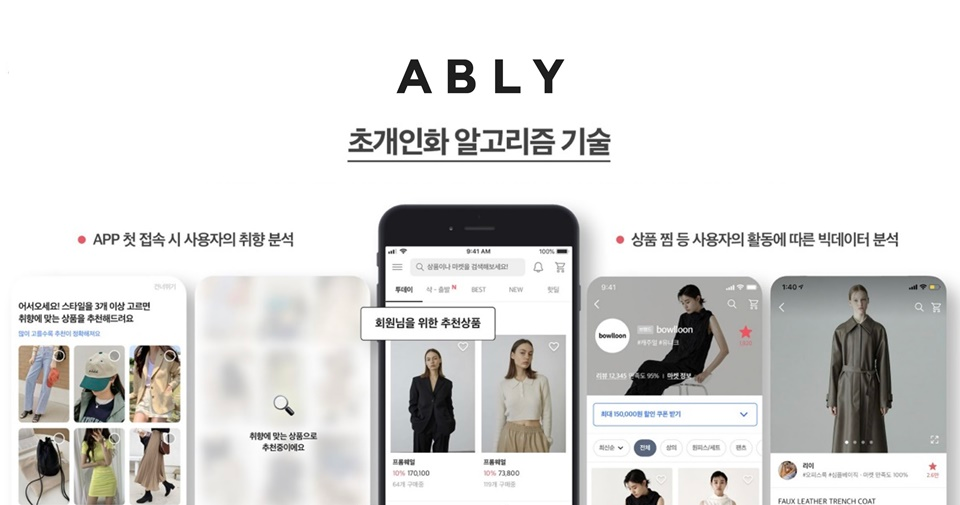
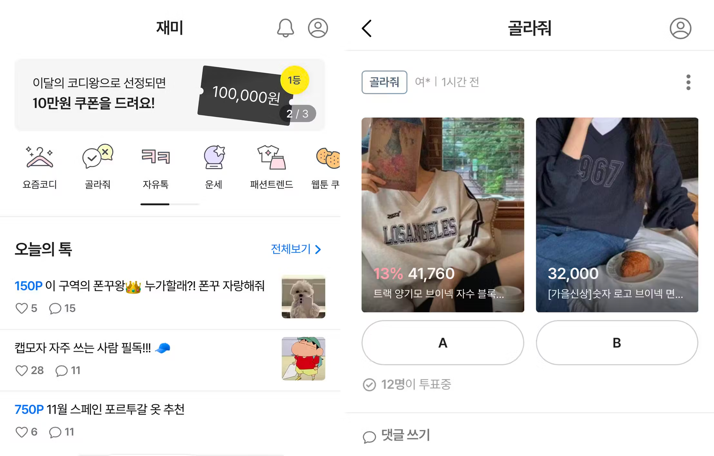

에이블리
맞춤 추천과 커뮤니티는 상품 탐색과 재방문을 어떻게 돕는가?
개인의 취향에 맞는 상품을 발견하고 구매하도록 돕는 스타일 커머스 플랫폼.
학습 목적취향 추천·카테고리 확장·커뮤니티가 상품 발견과 재방문으로 이어지는 방식을 분석했습니다. 무료배송을 활용한 유입 전략과 게시글 분류·영상 상품 태그 개선안도 함께 정리했습니다.
개인 학습 기록 · 관찰한 경험, 기획 의도에 대한 해석, 개선 제안을 구분해 정리했습니다. 수치·요금·정책은 분석 당시 조사한 자료이며 현재 기준이나 직접 만든 성과가 아닙니다.
01사용자와 해결 방향
누구를 위한 서비스인가취향에 맞는 패션·뷰티·라이프스타일 상품을 찾는 구매자와 자신만의 상품을 알리고 싶은 판매자.
Why · 사용자가 찾는 이유
여러 쇼핑몰을 일일이 찾아다니지 않고 내 취향과 예산에 맞는 상품을 발견하고 싶다. 구매 전 다른 사람의 의견과 실제 사용 경험도 참고하고 싶다.
What · 제공 경험과 해결 방식
여러 판매자의 패션·뷰티·생활 상품을 한곳에서 비교하고, 개인화 추천으로 원하는 상품을 찾도록 돕는다. 커뮤니티에서 쇼핑 고민과 취향을 나눌 수 있다.
시작점 · 웹 쇼핑몰에서 모바일 유통으로
원문에서 살펴본 강석훈 대표의 창업 배경은 웹에서 앱으로 이동하는 쇼핑 환경이었다. 단일 쇼핑몰보다 여러 판매자를 연결하는 앱을 선택하고, 데이터 기반 취향 추천으로 판매자와 구매자의 관계를 만드는 방향에 주목했다.
02핵심 기능과 벤치마킹
- 개인화 추천
- 클릭·탐색으로 드러나는 취향을 다음 상품 제안에 반영.
- 카테고리 확장
- 패션에서 뷰티·홈데코 등 취향이 이어지는 영역으로 탐색 확장.
- 골라줘·자유톡
- 구매 목적이 없는 순간에도 쇼핑 고민과 취향을 나누는 참여 동기.
비교해서 살펴본 지점
- 유튜브 하울 콘텐츠
- 상품 사용 맥락을 영상으로 전달하는 방식.
- 무신사
- 소비자가 만든 콘텐츠와 상품을 연결하는 방식.

크게 보기 ↗
크게 보기 ↗카테고리와 참여 방식의 확장
마이크로 셀러에서 중대형 쇼핑몰·스포츠·디자이너·명품까지 패션 구색을 넓히고, 뷰티·홈데코·핸드메이드·완구·팬시·문구·푸드로 확장하는 전략을 살폈다. 재미 탭의 골라줘·자유톡·운세는 구매 전후에도 취향을 탐색하고 참여하는 장치로 해석했다.
03사용자 흐름과 기획 의도
관찰한 경험
- 무료배송 혜택을 강조한 유입 전략과 개인 취향에 맞춘 추천을 함께 살펴봤습니다.
- 패션에서 뷰티·홈데코 등으로 확장한 상품군과 ‘골라줘’·‘자유톡’ 등 참여 기능을 분석했습니다.
무료배송을 찾기까지의 광고 실험
- 실험 기준
- 가입을 유도할 강점을 여러 광고 소재로 시험하고, 설치당 비용(CPI)이 낮은 소재에 예산을 집중. 채널과 소재를 같은 기준으로 비교.
- 차별화
- 2018년 당시 무료배송을 차별 혜택으로 내세운 과정을 조사. 원문에 인용한 자료에서는 2019년 중반 MAU 100만·약 10배 성장을 소개했으며, 이는 당시 회사 사례이지 개인 성과가 아님.
왜 이렇게 설계했을까 · 나의 해석
- 추천이 취향에 맞을수록 사용자가 플랫폼의 다른 제안도 받아들이기 쉬워질 것이라고 해석했습니다.
- 커뮤니티는 구매 목적이 없을 때도 취향을 탐색하고 머무를 이유를 만드는 장치로 봤습니다.
04문제와 개선 제안
Pain Point · 걸리는 지점
- 여러 주제의 인기글이 섞여 관심 있는 이야기만 골라 읽기 어렵다.
- 외부 하울 영상을 보고 상품 정보를 댓글에서 찾아 다시 검색해야 한다.
내가 바꿔본다면
- 게시글 작성 시 주제 태그로 작성 방향을 안내하고, 인기글을 관심 주제별로 나누기.
- 사용자가 만든 하울·스타일링 영상에 상품 태그를 연결해 콘텐츠에서 구매까지의 탐색 줄이기.
05장점과 아쉬운 지점
좋았던 점
- 추천과 카테고리 확장이 하나의 ‘취향’이라는 맥락으로 이어진다.
- 쇼핑 밖의 재미와 소통이 재방문 이유를 만든다.
아쉬운 점 · 더 살필 점
- 커뮤니티가 커질수록 글의 주제 분류와 탐색 기준도 함께 필요하다.
06내가 주목한 점
기획에 가져갈 기준
- 추천의 정확도뿐 아니라 추천을 통해 쌓인 신뢰가 어떤 다음 행동으로 이어지는지 살펴볼 것.
- 구매자와 판매자의 접점을 콘텐츠 안에 설계하되, 관심 주제별 탐색을 함께 고려할 것.